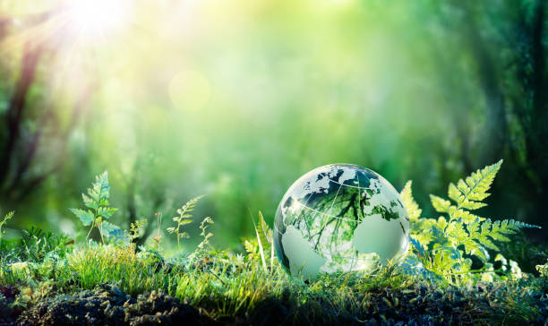

What Is Environmental Awareness?
The environment refers to all the living and non-living elements that surround us and have an impact on our quality of life. It includes natural resources, ecosystems, climate, air, water, land, plants, animals, and human-made structures.
The environment plays a crucial role in sustaining life on Earth and provides the resources necessary for human well-being. It also influences various aspects of our lives, including our health, economy, and social interactions.
Here are some key points about the environment:
Living elements: This includes plants, animals, microorganisms, and humans. They interact with each other and their surroundings, forming complex ecosystems.
Non-living elements: This includes air, water, soil, minerals, and energy sources. These elements provide the necessary resources for life and support various ecological processes.
Renewable resources: These are resources that can be replenished naturally or through human intervention, such as sunlight, wind, water, and forests.
Non-renewable resources: These are resources that are finite and cannot be replenished within a human lifespan, such as fossil fuels (coal, oil, natural gas) and minerals.
Environmental protection: It involves efforts to conserve and sustainably manage natural resources, reduce pollution, mitigate climate change, and protect ecosystems and biodiversity.
Environmental impact: Human activities can have both positive and negative impacts on the environment. For example, industrial processes and excessive resource extraction can lead to pollution, habitat destruction, and climate change, while sustainable practices and conservation efforts can help preserve and restore the environment.
Environmental sustainability: This refers to the ability to meet the needs of the present generation without compromising the ability of future generations to meet their own needs. It involves balancing economic development, social well-being, and environmental protection.
Understanding and promoting environmental awareness is essential for addressing environmental challenges, mitigating climate change, and creating a sustainable future for all.
Environmental awareness refers to the knowledge and understanding of the environment and the recognition of the impact of human activities on it. It involves being conscious of the natural world, its resources, and the need to protect and preserve it for future generations.
Environmental awareness encompasses various aspects, including:
Environmental protection: Understanding the importance of conserving natural resources, reducing pollution, and minimizing waste to prevent harm to the environment and promote sustainability.
Public health: Recognizing the link between the environment and human health, and the need to address environmental factors that can impact public health, such as air and water pollution, exposure to toxins, and climate change.
Stewardship: Taking responsibility for the care and management of the environment, including promoting sustainable practices, supporting conservation efforts, and advocating for policies that protect the environment.
Education and advocacy: Promoting awareness and understanding of environmental issues through education, outreach, and advocacy efforts to encourage individuals, communities, and governments to take action.
Environmental awareness is crucial for addressing environmental challenges and achieving a more sustainable future. It empowers individuals to make informed choices, supports the development of environmentally friendly policies and practices, and fosters a sense of responsibility towards the natural world.


Environmental Degradation
Environmental degradation is a process through which the natural environment is compromised in some way, reducing biological diversity and the general health of the environment. This process can be entirely natural in origin, or it can be accelerated or caused by human activities.
Many international organizations recognize environmental degradation as one of the major threats facing the planet, since humans have only been given one Earth to work with,
and if the environment becomes irreparably compromised, it could mean the end of human existence.
major factors contributing to environmental degradation are:
-
Deforestation
-
Climate change
-
pollution
Deforestation
Deforestation is the permanent destruction of forests in order to make the land available for other uses. It is one of the leading causes of environmental degradation because it reduces biodiversity, disrupts the water cycle, and contributes to climate change.
Trees also play an important role in the water cycle by absorbing water from the ground and releasing it into the atmosphere. Without trees, the water cycle is disrupted, leading to droughts and floods.
Deforestation also contributes to climate change by releasing carbon dioxide into the atmosphere.
Additionally, deforestation can lead to soil erosion, which can lead to desertification and other land degradation issues.
All of these effects of deforestation can have long-lasting impacts on the environment.
Forests cover 31% of the land area on our planet. They help people thrive and survive by, for example, purifying water and air and providing people with jobs; some 13.2 million people across the world have a job in the forest sector and another 41 million have a job that is related to the sector. Many animals also rely on forests. Forests are home to more than three-quarters of the world’s life on land. Forests also play a critical role in mitigating climate change because they act as a carbon sink—soaking up carbon dioxide that would otherwise be free in the atmosphere and contribute to ongoing changes in climate patterns.
But forests around the world are under threat, jeopardizing these benefits. The threats manifest themselves in the form of deforestation and forest degradation. The main cause of deforestation is agriculture (poorly planned infrastructure is emerging as a big threat too) and the main cause of forest degradation is illegal logging.
In 2019, the tropics lost close to 30 soccer fields' worth of trees every single minute.
Deforestation is a particular concern in tropical rain forests because these forests are home to much of the world’s biodiversity.
For example, in the Amazon around 17% of the forest has been lost in the last 50 years, mostly due to forest conversion for cattle ranching.
Deforestation in this region is particularly rampant near more populated areas, roads and rivers, but even remote areas have been encroached upon when valuable mahogany, gold, and oil are discovered.
Climate change
.jpeg)
Climate change is a major contributor to environmental degradation because it can cause soil erosion, which is the process of wearing away the land surface by the action of natural forces such as wind, water, and ice. Climate change can cause an increase in the intensity and frequency of storms, worsening erosion.
This can be especially damaging in areas that are already prone to soil erosion due to their topography or land use.
Additionally, climate change can cause an increase in the intensity and frequency of floods.
Floods can carry away large amounts of sediment, which is then deposited elsewhere, leading to changes in the landscape.
Furthermore, climate change can cause an increase in the intensity and frequency of droughts, which can lead to soil erosion due to wind and water.
In other cases, climate change can create longer periods of drought, which results in insufficient plant growth.
Pollution


What is Pollution?
Pollution is the introduction of harmful materials into the environment. These harmful materials are called pollutants. Pollutants can be natural, such as volcanic ash. They can also be created by human activity, such as trash or runoff produced by factories. Pollutants damage the quality of air, water, and land.
Many things that are useful to people produce pollution. Cars spew pollutants from their exhaust pipes. Burning coal to create electricity pollutes the air. Industries and homes generate garbage and sewage that can pollute the land and water. Pesticides—chemical poisons used to kill weeds and insects—seep into waterways and harm wildlife.
All living things—from one-celled microbes to blue whales—depend on Earth’s supply of air and water. When these resources are polluted, all forms of life are threatened.
Pollution is a global problem. Although urban areas are usually more polluted than the countryside, pollution can spread to remote places where no people live. For example, pesticides and other chemicals have been found in the Antarctic ice sheet. In the middle of the northern Pacific Ocean, a huge collection of microscopic plastic particles forms what is known as the Great Pacific Garbage Patch.
Air and water currents carry pollution. Ocean currents and migrating fish carry marine pollutants far and wide. Winds can pick up radioactive material accidentally released from a nuclear reactor and scatter it around the world. Smoke from a factory in one country drifts into another country.
In the past, visitors to Big Bend National Park in the U.S. state of Texas could see 290 kilometers (180 miles) across the vast landscape. Now, coal-burning power plants in Texas and the neighboring state of Chihuahua, Mexico have spewed so much pollution into the air that visitors to Big Bend can sometimes see only 50 kilometers (30 miles).
What measures can we take?
To combat environmental degradation, it is crucial to adopt measures such as reducing waste generation, reusing items, and recycling materials. Conserving energy through energy-efficient practices, protecting natural resources, promoting sustainable transportation, advocating for policy changes, and raising awareness and educating individuals about environmental issues are also vital.
These collective efforts can contribute to mitigating the impact of environmental degradation and working towards a more sustainable future.
.jpeg)
"Like the mighty oak standing tall in the face of relentless storms, let us persevere in protecting our environment despite the challenges it may face. For it is through unwavering determination and collective action that we can cultivate a sustainable future for generations to come."